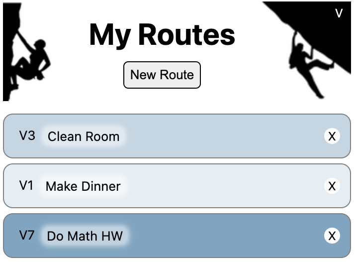

ToSend List

Tools & Technologies
HTML, JavaScript, Chrome Developer
Description
ToSend List is a climbing themed to do list I created using HTML and JavaScript. It is currently published on the Chrome Web Store and is available for free. Not only does it have the basic functionalities of a to do list (add, delete, and mark tasks as complete), it also allows you to grade your tasks on the bouldering scale (supports both V-Scale and Font-Scale).
My Motivation:
This project was inspired by two of my obsessions: rock climbing and to-do lists. Throughout my daily life, I am dedicated to staying organized and consistently use to-do lists, whether on paper post-its or digital apps. When I'm not at school or engaged with other responsibilities, you can find me at the nearest rock climbing gym. I have been an avid rock climber for seven years, competing at both Youth and Collegiate levels. Recognizing the potential to combine these two interests, I developed ToSend List, seamlessly merging my enthusiasm for climbing with my commitment to productivity.